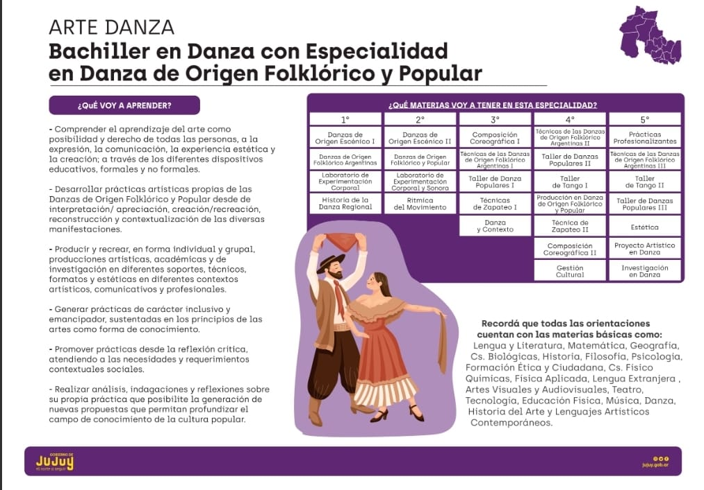
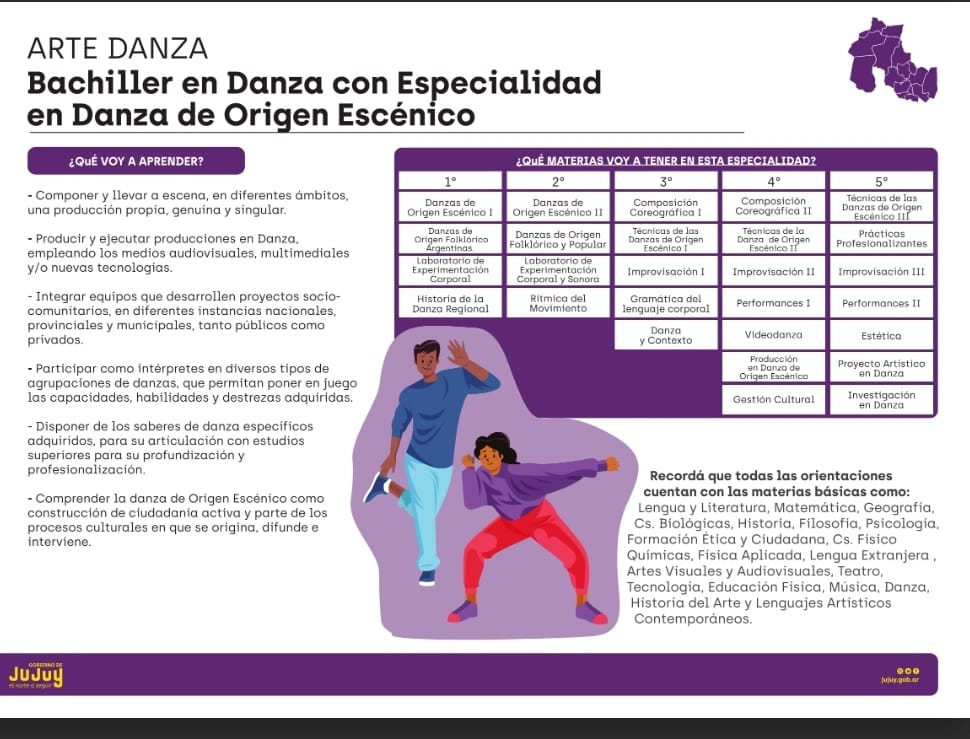

INFORMACION GENERAL

DURACION DEL CURSADO: 5 AÑOS
2 AÑOS: CICLO BASICO
3 AÑOS: CICLO ORIENTADO
Horario Estimado:
07:20 a 13:10
14:00 a 18:20
18:00 a 21:00
Bachiller en danza con especialidad en danza de origen folklorico

Esta formacion propone desde las danzas de origen folklorico
y popular ampliar las posibilidades de movimiento de las y los estudiantesa traves del
conocimiento y aprendizaje de tecnicas que trabajan sobre la diversidad de los cuerpos y las diferentes
formas de bailar existentes.
*Reconocer y apropiarse del repertorio de las danzas folkloricas argentinas
*Crear y componer producciones en danzas de origen folklorico y popular
*Desarrollar actitudes para la conservacion del patrimonio cultural tradicional, la
indagacion y aplicacion de estas expresiones artisticas en un contexto actual.
Bachiller en danza con especialidad en danza de origen escenico
Esta formacion propone desde la danza contemporanea y sus nuevas
tendencias, ampliar las posibilidades de movimiento de las y los estudiantes a traves del
conocimiento y aprendizaje de tecnicas que trabajan sobre la diversidad de los cuerpos y las diferentes formas de bailar existentes.
*Crear y componer producciones en danza contemporanea, empleando medios audiovisuales, multimedia y nuevas tecnologias
*Poner en escena sus composiciones coreograficas y performaticas en diferentes espacios como la calle, el escenario convencional,
el aula, entornos naturales, la plaza.
*Vivenciar los diferentes roles en la produccion escenica (interprete-creador, espectador-publico)
Folklorico
BACHILLER EN DANZA CON ESPECIALIDAD EN DANZA DE ORIGEN FOLKLORICO Y POPULAR
ESPACIOS CURRICULARES A CURSAR


1er Año (Ciclo Basico)
Danzas de Origen Escenico I - Danza de Origen Folklorico Argentina - Laboratorio de Experimentacion Corporal -
Historia de la Danza Regional - Lengua y Literatura - Matematica - Ciencias Biologicas - Geografia - Lengua Extrangera -
Educacion Fisica - Formacion Etica y Ciudadana - Tecnologia - Artes Visuales - Musica
2do Año (Ciclo Basico)
Danzas de Origen Escenico II - Danza de Origen Folklorico y Popular - Laboratorio de Experimentacion Corporal y sonora
- Ritmica del Movimiento - Lengua y Literatura - Matematica - Ciencias Biologicas - Historia - Geografia - Lengua Extranjera -
Educacion Fisica - Formacion Etica y Ciudadana - Tecnologia - Teatro - Danza
3er Año (Ciclo Orientado)
Composicion Coreografica I - Tecnicas de la danza de origen folklorico Argentinas I - Taller de Danzas Populares I - Tecnicas de Zapateo
- Danza y Contexto - Lengua y Literatura - Matematica - Ciencias Biologicas - Historia - Geografia - Lengua Extrangera - Educacion Fisica -
contruccion de la Ciudadania - Artes Audiovisuales - Ciencias Fisico Quimicas - Historia del Arte
4to Año (Ciclo Orientado)
Técnicas de las Danzas de Origen Folklórico Argentinas II-Taller de Danzas Populares II-Taller de Tango I-Producción en Danza Folklórico Popular-
Técnica de Zapateo II-Gestión Cultural-Lengua y Literatura-Matemática-Física-Historia Política, Económica y Social de Argentina-Geografía - Lengua Extranjera-Educación Física-Psicología Social
5to Año (Ciclo Orientado)
Práctica Profesionalizante Técnicas de las Danzas de Origen Folklórico Argentinas III Taller de Tango II -Taller de Danzas Populares III-
Estética-Proyecto Artístico de Danza Investigación en Danza-Lengua y Literatura-Matematica Química en relación a los Lenguajes Artísticos-
Taller Integrado de Lenguajes Contemporáneos Artísticos Lengua Extranjera-Educación Física-Filosofía
Escenico
BACHILLER EN DANZA CON ESPECIALIDAD EN DANZA DE ORIGEN ESCENICO
ESPACIOS CURRICULARES A CURSAR


1er Año (Ciclo Basico)
Danzas de Origen Escénico I-Danzas de Origen Folklórico Argentina Laboratorio de Experimentación Corporal-Historia de la Danza Regional-
Lengua y Literatura-Matemática-Ciencias Biológicas-Geografía Lengua Extranjera-Educación Física-Formación Ética y Ciudadana-
Tecnología-Artes Visuales-Música
2do Año (Ciclo Basico)
Danzas de Origen Escénico II-Danzas de Origen Folklórico y Popular Laboratorio de Experimentación Corporal y Sonora-Ritmica del Movimiento-
Lengua y Literatura-Matemática-Ciencias Biológicas-Historia Geografía-Lengua Extranjera-Educación Física Formación Ética y Ciudadana-Tecnología-Teatro-Danza
3er Año (Ciclo Orientado)
Composición Coreográfica l-Técnicas de las Danzas de origen Escénico I Improvisación I-Gramatica del Lenguaje Corporal-Danza y Contexto Lengua y Literatura-
Matemática-Ciencias Biológicas-Historia-Geografía Lengua Extranjera-Educación Física-Construccion de la Ciudadanía Artes Audiovisuales-Ciencias Físico Química-Historia del Arte
4to Año (Ciclo Orientado)
Técnicas de las Danzas de Origen Escénico II-Performance I-Improvización II
Producción en Danza de Origen Escénico-Video en Danza Composición Coreográfica II-Gestión Cultural
Lengua y Literatura-Matemática-Física Historia Política, Económica y Social de Argentina-Geografía Lengua Extranjera-Educación Física-Psicología Social
5to Año (Ciclo Orientado)
Práctica Profesionalizante-Técnicas de las Danzas de Origen Escénico III Improvisación III-Performance II-Estética-Proyecto Artístico de Danza Investigación en Danza-
Lengua y Literatura-Matematica Química en relación a los Lenguajes Artístico Taller Integrado de Lenguajes Contemporáneos Artísticos Lengua Extranjera-Educación Física-Filosofía
Fotos de Salidas